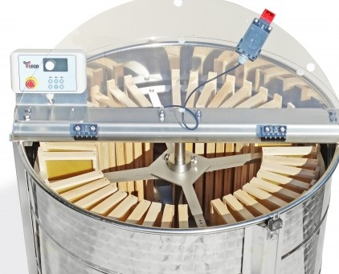
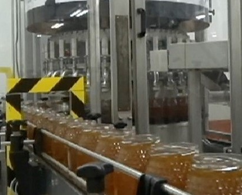
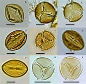

El extractor de miel es un elemento indispensable en apicultura, desde el pequeño productor hasta los profesionales necesitan esta herramienta, dimensionada según el tamaño de su explotación. Nuestra empresa cuenta con extractor con eje horizontal integrados de gran capacidad y que permiten la carga y descarga de los cuadros sin apenas manipulación emplazado en sala de extracción certificada por SENASA
Limpieza, precisión, posibilidad de trabajar con mieles de distinta viscosidad y buen rendimiento y que no emulsione la miel, son las características que deben tener lasa envasadoras de miel
Nuestra empresa ofrece al productor apícola este servicio para que pueda certificar la calidad de sus productos, brindando con ello una herramienta para agregar valor a la miel y abordar nuevos mercados. Con esta información aportada por nuestro equipo de profesionales se contribuye a fomentar la producción de mieles diferenciadas por su origen botánico, ya que la tendencia mundial es hacia el consumo de este tipo de productos
| Servicio | Precio/Kg de miel en el mercado |
| Extracción Miel/100 Kg | 100kg |
| Tipificaciónde miel/10 muestras | 20 kg | Envasado 100Kg/1Kg | 30kg |